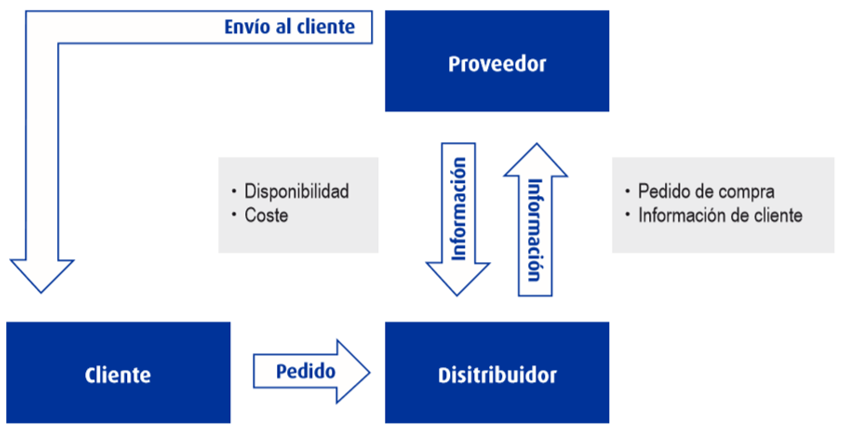
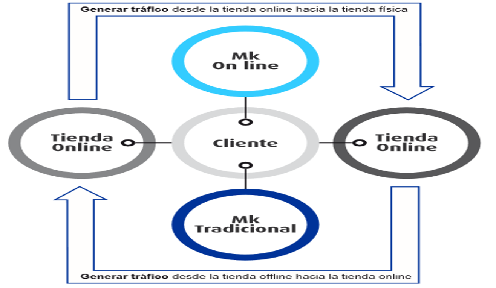

La venta multicanal es la que se esta produciendo en base a la necesidades de los nuevos clientes Los distribuidores tradicionales están siendo obligados a desarrollar un canal nuevo para la vender.
Brick and Mortar: Distribuidores físicos
Brick and Click o Click and Mortars: Tradicionales que han evolucionado
Pure Players o e-tailers: Nacidos en venta por catalogo y evolucionado
Multicanal: Venden en varios canales y han adoptado estrategias de los otros jugadores
Romper las barreras tecnológicas
Cambio en la política de comunicación
El cliente es quien decide cómo, cuándo, qué y muchas veces a qué precio comprar
Incrementar el surtido gamas exclusivas y extendida
Reducción de márgenes adaptándose a la competitividad de los pure player
Reducción de costes estructurales
El cliente es el que elige la forma de relacionarse con el distribuidor.
Efecto ROPO es el que actualmente calcula el desvió de trafico de las tiendas físicas.
Aprovechar el canal online.
Poder incorporar otros canales de venta.
El canal tradicional la logística en “Bulk” era la forma de suministrar las tiendas.
Centralizados: de uno a varios puntos.
Descentralizados.
Modelo Mixto, cada quien maneja su stok
Nivel 1:Una integración de información básica donde el proveedor comunica la disponibilidad y su precios de costo.
Nivel 2:No sólo hay una integración básica sino que también una integración automática.
Nivel 3:No solo hay integración de información de producto y gestión del pedido de compra sino también del pedido de venta.
Los Market Place son algo más que un modelo logístico, son un canal de venta alternativo al propio canal online
Ventajas para el vendedor:
Llegar a más clientes.
Evita el fraude al realizarse la transacción en Market Place.
Usar una ventaja competitiva que puede se una debilidad para Market Place.
Comisión porcentual sobre la venta.
Completar su contenido con más tipos de producto y ser competitivo en productos.
Vender al mismo precio es caro en el caso del canal online.
Tener una política de igualdad de precios puede resultar negativo
Por precio
Por comodidad
Promociones
Largo plazo
Corto plazo
Cliente el cliente el qué decide cuándo, cómo y qué quiere comprar.
El objetivo de una estrategia multicanal es aprovechar los canales de comunicación (On y Off) en dos direcciones.
